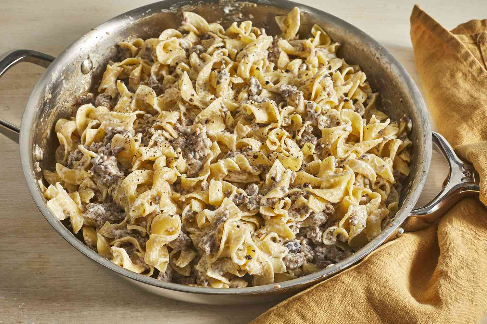

Recipe List
Beef Stroganoff

Description
This beef stroganoff recipe utilizes a roux to create a beef gravy that is thickened with sour cream and cream cheese served over egg noodles. The use of mushrooms in recipe is optional. Red pepper flakes can be adjusted (or omitted) to preferred spice level.
Ingredients
- 2 (2 pound) beef chuck roast, cut into 1/2-inch thick strips
- 1/2 cup red wine
- 1 teaspoon salt, or more to taste
- 1/2 teaspoon ground black pepper, or more to taste
- 1 tablespoon extra-virgin olive oil
- 1/2 cup butter, divided
- 1 large onion, diced
- 3 cloves garlic, minced
- 1 cup sliced mushrooms (optional)
- 1/4 cup all-purpose flour
- 1 1/3 cups beef stock
- 1 tablespoon Worcestershire sauce
- 2 teaspoons crushed red pepper flakes, or more to taste (optional)
- 1 teaspoon prepared yellow mustard
- 1 (3 ounce) package cream cheese, softened
- 1/3 cup sour cream
Steps
- Place beef into large bowl. Stir in red wine, salt, and black pepper. Marinate for 10 minutes (up to overnight), then remove beef and pat dry with a paper towel. Reserve remaining marinade.
- Heat olive oil in a large skillet over medium heat. Stir in beef; cook and stir until browned, 5 to 7 minutes. Transfer beef to a plate, then drain any remaining grease from the skillet.
- Melt 2 tablespoons butter in the skillet over medium heat. Stir in onion, garlic, and a pinch of salt. Cook and stir until onion is soft and translucent, 3 to 4 minutes. Transfer onion mixture to the plate with beef; set aside.
- Melt 2 tablespoons butter in the skillet over medium heat. Add mushrooms; cook and stir until tender, about 10 minutes. Transfer mushrooms to a bowl; set aside.
- Melt 1/4 cup butter in the skillet over medium heat. Whisk in flour; cook and stir until flour no longer tastes raw, about 4 minutes. Slowly whisk in beef stock. Bring to a boil, stirring constantly, then reduce heat to medium-low.
- Pour in reserved marinade, Worcestershire sauce, red pepper flakes, and mustard, then add beef and onion micture. Cover and simmer until meat is tender, about 1 hour. Season with salt and black pepper.
- Stir in mushrooms, cream cheese, and sour cream about 5 minutes before serving.
Top of page